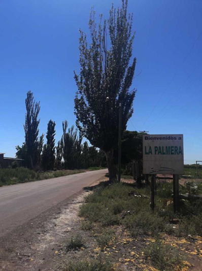
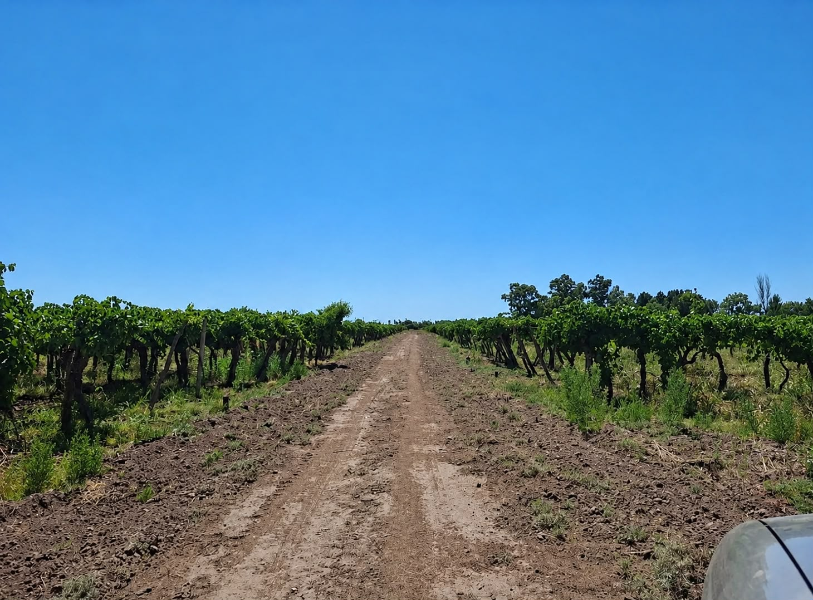

Ángel Argentino Guzmán
Dedicó su vida al trabajo en viñas y a la amansa de caballos. Presidente de la Agrupación Gaucha Santa Teresa.
Descubre la identidad del pueblo de La Palmera y las familias que construyeron sus raíces.
La Palmera es una localidad mendocina formada por familias pioneras que habitaron y trabajaron la tierra desde sus orígenes. Con el paso del tiempo, muchas familias fundadoras fueron dejando un legado imborrable.

Cartel de bienvenida e hileras de álamos habituales de la zona.

Dedicación agrícola y vitivinícola cotidiana.
Imagen en proceso de carga
Destacado por su distribución única: cada familia posee un lote de aproximadamente una hectárea, destinado fundamentalmente a parrales, chacras y producción.
Un pilar fundamental de la localidad, fuertemente vinculado a la santa patrona y a las actividades de la Agrupación Gaucha Santa Teresa.
Es la actividad económica más importante del sector, complementada con el cultivo de frutas y hortalizas.
Crianza de animales de granja y elaboración artesanal de dulces y salsas caseras.
Mantiene vivas sus raíces mediante las agrupaciones "La Palmera" y "Santa Teresa".
Dedicó su vida al trabajo en viñas y a la amansa de caballos. Presidente de la Agrupación Gaucha Santa Teresa.
Recordado por su compromiso incansable. Trabajó durante toda su vida como obrero en la conocida Finca Manrique.
Raquel Olavarría donó el terreno para la escuela. Antes de construir el edificio, las clases se dictaban en su propia vivienda.
Edita Mayorga y Florencio Trinka organizaron por más de 40 años el chocolate del Día del Niño con leche de sus vacas.